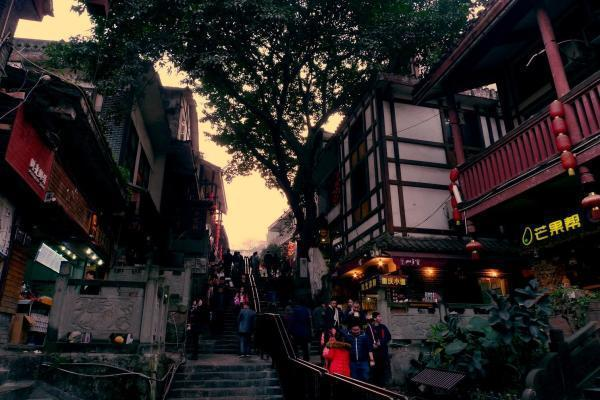

重庆——行千里，至广大


重庆，简称“渝”，别称山城，是中华人民共和国省级行政区、直辖市、国家中心城市、超大城市，国务院批复确定的中国重要的中心城市之一、长江上游地区经济中心、国家重要的现代制造业基地、西南地区综合交通枢纽。
重庆简介


重庆，简称“渝”，别称山城，是中华人民共和国省级行政区、直辖市、国家中心城市、超大城市，国务院批复确定的中国重要的中心城市之一、长江上游地区经济中心、国家重要的现代制造业基地、西南地区综合交通枢纽。